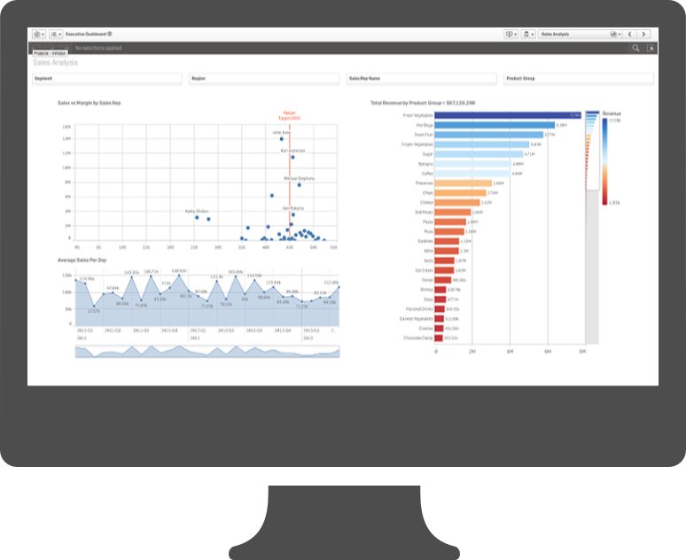
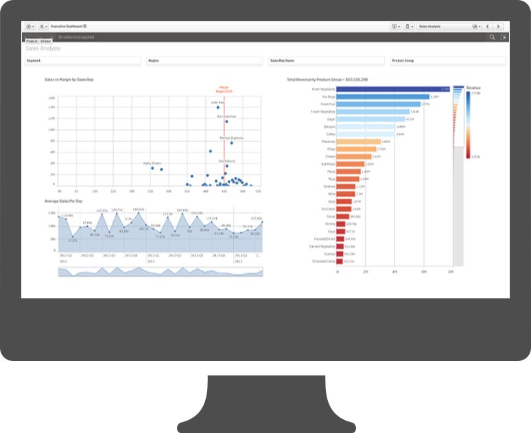
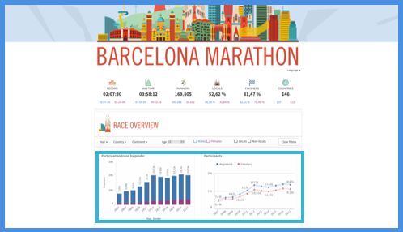
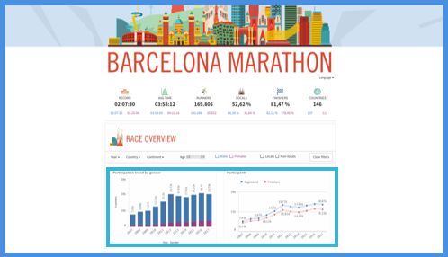

100: Prereq: Qlik's Open Ecosystem
An introduction to Qlik’s open architecture
Learning goal: Understand Qlik’s ecosystem, how the Qlik Sense Client fits, and how it can be customized with the APIs
As you can see, Qlik’s Associative Model enables you to quickly slice and dice the data, while the visualizations display the results of your queries in charts that work across devices. These visualizations are part of the dashboarding tool known as the Qlik Sense Client, often referred to as Qlik Sense for short. With Qlik Sense, users can easily drag and drop data and charts into a dashboard, creating a powerful and explorable visual analytics tool in a matter of minutes. Qlik Sense works in the browser, allowing it to be deployed across multiple devices, from desktops all the way down to the phone. The dashboarding tool is fully responsive, providing an insight-driven experience on any device. For more on the out of box Qlik Sense Product, check out this product tour.
Qlik Sense, Under the Hood
Qlik Sense is one piece of a larger ecosystem known as the Qlik Analytics Platform. This platform is designed with an open architecture that enables us to leverage and customize it’s components in different ways. In order to understand this open ecosystem, let’s first take a closer look at how Qlik Sense works under the hood.
As a user of Qlik Sense, you are probably most familiar with using the dashboarding tool via a web browser to produce self-service analytics. In the browser, you can load in data, drag and drop new charts, and filter the data as you explore the sheets. Your experience is most likely reflected in this diagram:
In reality, there is a lot more going on with Qlik Sense than what you see in the browser. The Qlik Sense Client, which is loaded in your browser, is responsible for the UI on top of your data. It provides the drag and drop GUI for adding data, creating charts, and interacting with your data. However, the Associative Model that powers the data analytics experience resides outside of the client in what is known as the QIX Engine. The QIX Engine is responsible for all data related functions, including loading data, storing the data in memory, filtering the data, and provisioning access to the data. It lives on a Qlik Sense server.
With this in mind, the Qlik Sense experience looks more like this:

A user interacts with the Qlik Sense Client and makes a selection.
The client then communicates to the QIX Engine that a selection has been made.
The QIX Engine processes the new data based on the user's selection, and sends back this updated data to the Qlik Sense Client.With this process in mind, we can think of the Qlik Sense Client as a dashboarding GUI on top of the QIX Engine. It’s a great solution, but not the only use case for the Associative Model…
 


The Open Ecosystem
This leads us to the open ecosystem. As we’ve seen before, the Associative Model is a powerful tool for slicing and dicing data, and the Qlik Sense Client is an intuitive vehicle for exploring that data visually. But the client is not the be-all and end-all of visual analytics. What if we encounter a problem that can’t be solved with a standard bar chart? How about leveraging a responsive Qlik Sense visualization in another environment? Or what if we are trying to build a solution outside of a dashboard that could benefit from associative modeling?
Fortunately, Qlik offers a solution for these custom scenarios with its open ecosystem. Qlik has introduced a set of APIs that enable users to extend their products, allowing us to build custom solutions with Qlik Sense and the QIX Engine. These solutions allow us to incorporate Qlik’s visual analytics capabilities into any other environment, opening up a world of options for seamless and innovative data discovery.
There are 3 main ways that users customize the Qlik Sense experience:
Customizing the Qlik Sense Client with Extensions to enable new functionality and advanced charting
Embedding Qlik Sense analytics into other environments, so that Qlik Sense can be used within other portals or rebranded completely
Integrating the QIX Engine into custom solutions in order to leverage the data of the QIX Engine with any technology
Let’s go through these customizations one by one.

Customizing the Qlik Sense Client with Extensions
The Qlik Sense Client, aka the self-service dashboarding tool that users interact with, comes with great out of box charting options. However, we aren’t limited to just leveraging what Qlik Sense provides. The web contains a plethora of tools for visualizing data. Thanks to Qlik’s open APIs, these can be brought directly into the tool using what are called Extensions. Extensions are custom chart objects embedded into the Qlik Sense Client. They behave just like out of box charts - they update based on data, they can trigger selections and other changes to the dashboard, and they resize to fit any device. When done properly, an extension may be indistinguishable from an out of box chart to an end user. Extensions are added to a dashboard through Qlik Sense’s drag and drop GUI, just like the existing charts.
Try out an extension for yourself with Axis Group’s MapboxGL Extension in this Qlik Sense app.
In this scenario, users are still using the Qlik Sense client directly, but with some custom components added in. Qlik Branch is a community of developers that share open source Qlik Sense extensions. Try out some of the unique visualizations there, such as:
a Correlation Matrix for looking at relationships between measures
a Hex Bin plot for aggregating dense scatter plots into larger groups
Embedding Qlik Sense analytics into other environments
Qlik Sense and its components don’t have to necessarily live in a Qlik Sense dashboard. What if you wanted to leverage a Qlik Sense sheet in an existing customer portal, alongside other content? Or embed a Qlik Sense chart into a website? Both easy requests, thanks to Qlik’s APIs for producing Mashups. Mashups typically refer to any solution in which the Qlik Sense Client is embedded into another platform. Through the APIs, we can embed entire dashboards, individual sheets, or even individual objects into other websites, allowing us to leverage the visual analytics capabilities of Qlik in more use cases that go beyond dashboarding.
Try out a mashup for yourself with this Barcelona Marathon app. Notice how the page is a custom web interface, but has Qlik Sense charts embedded into it.
In this scenario, users are interacting with a third party website that is embedding Qlik Sense.
Integrating the QIX Engine into other solutions
The QIX Engine drives the Associative Model of Qlik Sense. It gives us the powerful data engine, without any assumptions of how we might render that data. While the Qlik Sense Client is fantastic for self-service visualization, you may find other data analytic needs that could leverage the Associative Model without the need for the self-service dashboard layer. Qlik’s APIs provide this opportunity as well! In the open ecosystem, we are given access to the same QIX Engine API that the Qlik Sense Client uses. With this API, we can interact directly with the Engine and data loaded in the Associative Model, while maintaining complete flexibility on how we leverage the data outside of Qlik. Therefore, we can use the QIX Engine as a data analytics driver behind any type of product with data needs! For example, we could build a bespoke native mobile app that leverages the QIX Engine for its data layer. Or we could ditch visual interfaces entirely and build a chatbot for data analytics!
In this scenario, users never interact with the Qlik Sense Client in any way.

 

Why an open ecosystem?
Through this open ecosystem, Qlik provides more than a BI tool. It provides a platform for holistic analytics. Any use-case involving data can be answered with Qlik Sense, thanks to its ability to integrate and customize with third party solutions.
Anything that can’t be accomplished with the dashboarding GUI out of box can easily be incorporated, making the self-service model flexible enough to meet any user requirements. The analytics can be embedded into other systems, allowing you to meet your users where they are. And if you have specialized needs that have nothing to do with dashboarding, you can go directly to the QIX Engine for a high-powered analytics backend to power the front-end of your choosing.
Looking to connect with other developers who are also implementing their own custom solutions in the Qlik Sense Open Ecosystem? Come join the Qlik Branch Slack channel to get connected.
Fin
Recap
Qlik Sense is a tool for creating self-service data visualizations and dashboards
Qlik Sense leverages the Associative Model powered by the QIX Engine on a Qlik Sense Server
The Qlik Analytics Platform includes APIs allowing us to extend and embed Qlik Sense, as well as work directly with the QIX Engine